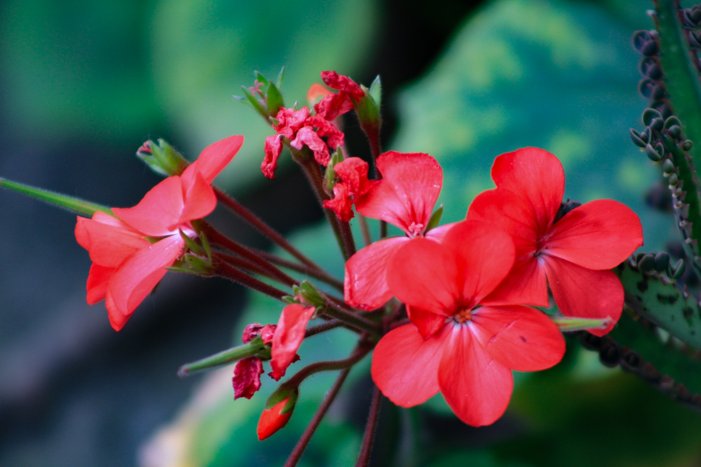
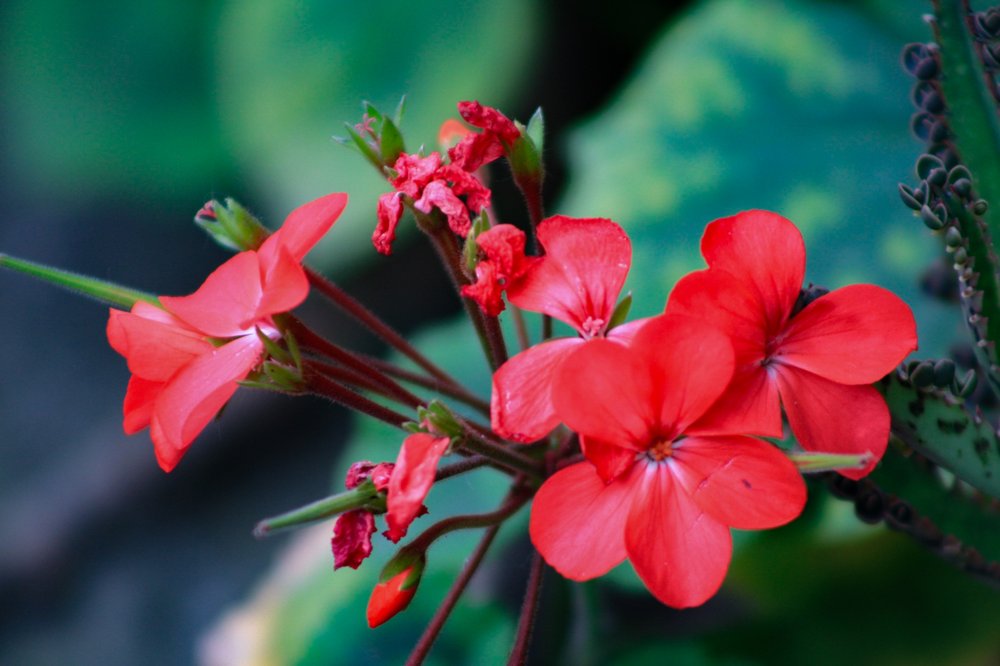
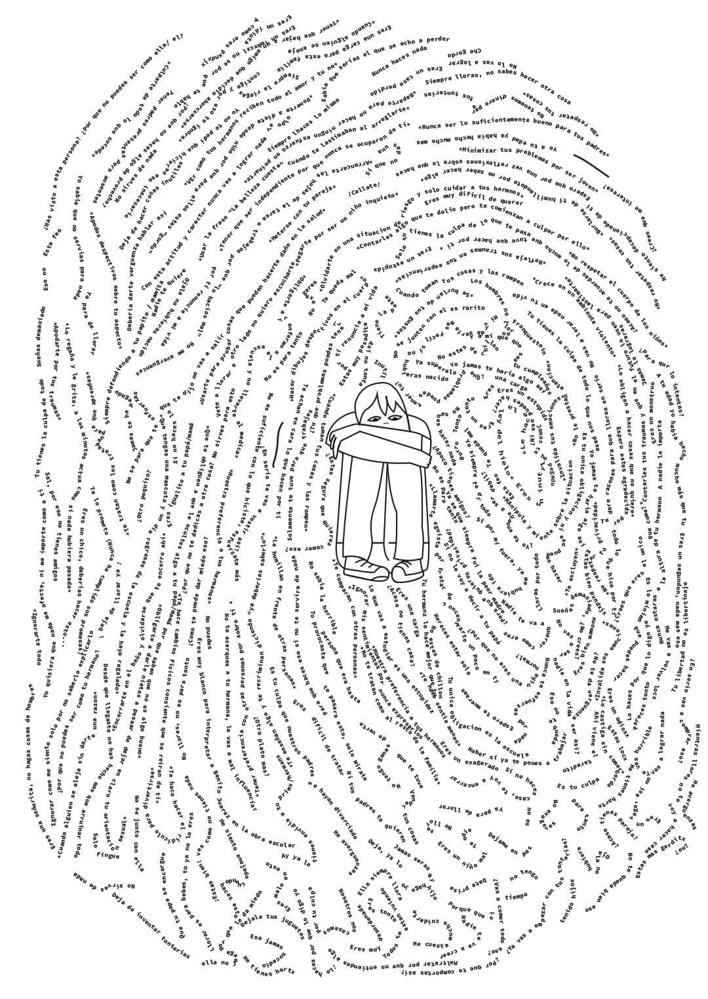
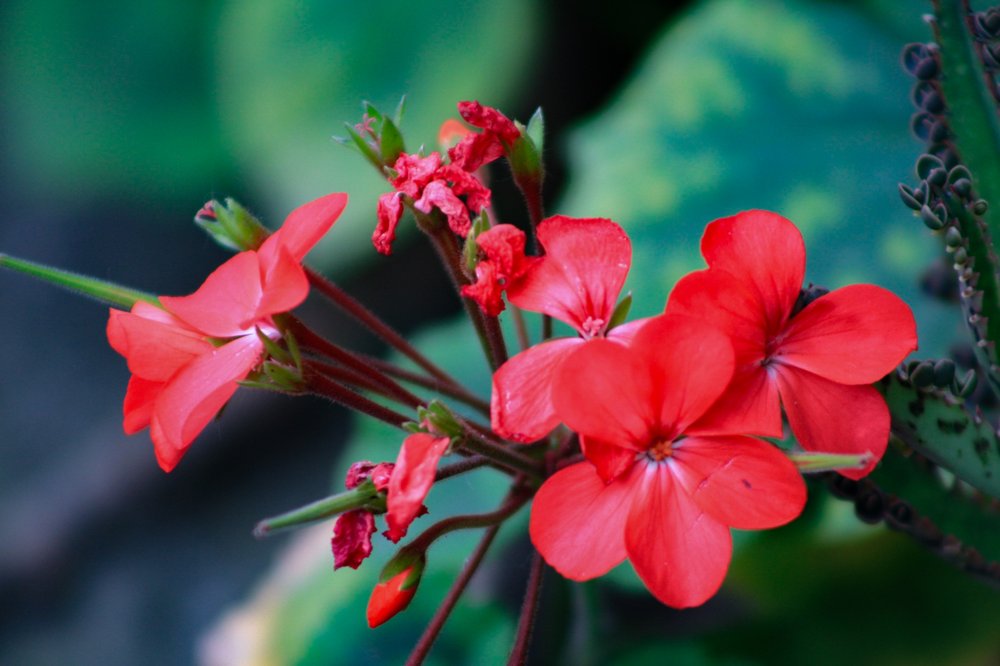

Mis fotos
Aqui te muestro algunas de mis fotografias, tomadas a lo largo de mi carrera profesional siendo estudiante.


 

Desarrollador Web | Diseñador Gráfico | Aficionado a la Fotografía
Estudiante (por el momento) de Diseño de la Comunicacion Grafica de la Universidad Autonoma Metropolitana, en busca de la especializacion de medios digitales, se de todo un poco, Preprensa, diseño editorial, medios audiovisules, ilustracion y lo basico para diseñar un sitio web.
En esta sección te muestro algunos de los carteles que he diseñado mientras estudio.


Realice un cartel que concursaria en la Bienal Internacional del Cartel, uno de los concursos mas importantes para los diseñadores en el mundo, y apesar que no fui seleccionada, pase a la segunda fase del concurso mas importante del mundo con este cartel. Describe demasiado el como podemos llegar a afectar a los niños con nuestras acciones y palabras, es el intento de dar voz a todos los pequeños que "exageran".
Aqui te muestro algunas de mis fotografias, tomadas a lo largo de mi carrera profesional siendo estudiante.
